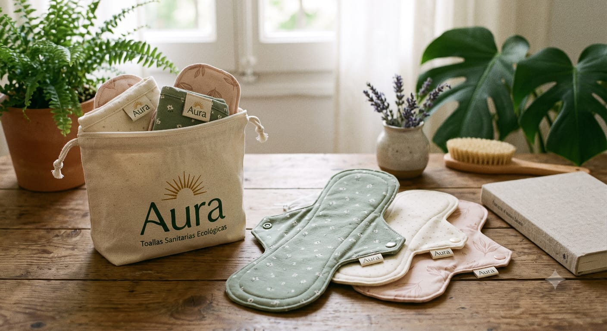
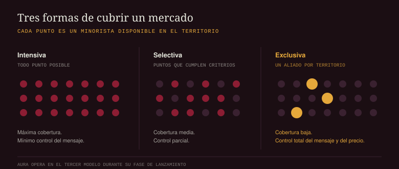

Aura sale a la venta en San Pedro Sula el 1 de septiembre. Son toallas sanitarias de tela, lavables y reutilizables, con capa de contacto de algodón, núcleo absorbente de bambú y broche de presión en las alas. Se cosen acá, en la ciudad.
Y no las vas a encontrar en el supermercado.
No es un problema de producción ni una promesa de «pronto en más puntos». Es una decisión de canal tomada antes de cortar la primera tela. Aura arranca con seis puntos de venta, todos en San Pedro Sula, cada uno con un acuerdo de exclusividad firmado. Este artículo explica por qué, porque la razón es también el argumento del producto.

El dato que decidió dónde fabricar
Hay un hallazgo en la literatura de ciclo de vida que casi ninguna marca de toallas reutilizables menciona, porque la deja mal parada. El informe de la Life Cycle Initiative del Programa de las Naciones Unidas para el Medio Ambiente, que reúne y compara los estudios disponibles, concluye que las toallas reutilizables producidas en el extranjero y enviadas por vía aérea tienen el mayor impacto ambiental de todas las opciones evaluadas, incluso frente a las desechables. Y remata: comprar localmente es clave.[1]
Dicho sin rodeos: una toalla de tela fabricada en Asia, traída en avión y vendida como producto ecológico puede ser peor que la desechable que dice reemplazar.
Coser en San Pedro Sula y vender en San Pedro Sula no es una historia de marca. Es la condición para que el argumento ambiental se sostenga.
El mismo informe señala que, según el contexto geográfico, las toallas reutilizables lavadas de forma eficiente en energía sí tienen menor impacto que las desechables.[1] Las dos condiciones —producción local y lavado razonable— no son opcionales. Son lo que separa una toalla reutilizable que cumple de una que solo lo aparenta.
Tres maneras de cubrir un mercado
Cuando una marca de consumo masivo decide dónde estará disponible, elige entre tres intensidades de distribución. La categoría de higiene femenina opera, casi sin excepción, en la primera.

Distribución intensiva
Estar en la mayor cantidad de puntos posible. Es la estrategia correcta cuando el producto se compra por impulso o por costumbre, y la decisión se toma en segundos frente al estante.
Distribución selectiva
Un número limitado de minoristas que cumplen ciertos criterios. Electrodomésticos, cosmética de gama media, calzado deportivo.
Distribución exclusiva
Un solo aliado por territorio, con contrato de exclusividad. Se usa cuando el producto necesita explicación, cuando el precio no puede erosionarse y cuando la marca no puede permitirse que un tercero la represente mal.
Cuatro razones para renunciar a la cobertura
1. Una toalla reutilizable exige una conversación, no un empaque
Este es el punto decisivo, y es específico del producto. Una desechable no requiere explicación: se usa y se tira. Una toalla de tela requiere que alguien responda cuántas necesitás para un ciclo completo, cómo se lava, cuánto tarda en secar, cuántos años dura y qué hacer cuando estás fuera de casa.
Ninguna de esas preguntas cabe en un empaque, y todas determinan si la compra termina en uso real o en un cajón. La revisión sistemática más amplia disponible sobre toallas reutilizables —cuarenta y cuatro estudios, cerca de catorce mil ochocientas participantes— identifica precisamente el lavado, el secado y la privacidad como las dificultades más reportadas por las usuarias.[2] Un producto cuyo principal obstáculo es de uso, no de compra, necesita un canal que enseñe.
2. Protege la posición de precio
Aura cuesta más de entrada que un paquete de desechables. Esa comparación solo tiene sentido repartida en los años que dura el producto, y hacer esa cuenta frente a una góndola no lo hace nadie. El contrato de exclusividad fija una política de precio única en los seis puntos: cuesta lo mismo en Guamilito que en Jardines del Valle, y eso es verificable.
3. Control de la promesa ambiental
La Comisión Europea revisó una muestra de afirmaciones ambientales usadas para vender productos y encontró que el 53 % daba información vaga, engañosa o infundada, y que el 40 % no tenía ninguna evidencia detrás. La mitad de las etiquetas verdes ofrece verificación débil o inexistente.[3]
En un estante compartido, una marca que fabrica localmente y otra que importa por avión se ven igual de verdes a un metro de distancia. La distribución exclusiva saca a Aura de esa comparación y la lleva a un contexto donde la diferencia se puede explicar.
4. Capacidad real de un taller que cose
Hay una razón menos elegante y conviene decirla. Esto se cose, no se imprime: la producción inicial tiene un techo por costurera y por hora. Prometer presencia amplia y no cumplirla daña más que empezar chico y cumplir.
Por qué San Pedro Sula y no todo el país
Lanzar en cuatro ciudades a la vez habría significado dos puntos por plaza: presencia simbólica en todas partes y masa crítica en ninguna. San Pedro Sula reúne tres condiciones que el resto del país no tiene al mismo tiempo:
- Densidad del segmento. Es la plaza comercial del país y donde se concentra la mayor cantidad de mujeres del perfil al que apunta la marca.
- Tejido de comercio independiente. Farmacias de barrio y tiendas de producto natural donde la recomendación de mostrador todavía pesa más que el empaque. Ese canal es el que hace posible la estrategia.
- Cero transporte para el producto. Se cose y se vende en la misma ciudad. Es la condición que el informe de la Life Cycle Initiative señala como determinante[1], y acá se cumple por diseño, no por suerte.
Concentrar el lanzamiento en una ciudad permite además medir: con seis puntos en un mismo mercado, las diferencias de rotación se explican por ejecución y no por variables regionales que no controlamos.
Cómo se eligieron los seis puntos
- Disposición a capacitarse. El personal recibe una sesión sobre materiales, tamaños, lavado y vida útil. Un punto que no acepta la capacitación no entra.
- Exclusividad recíproca. El aliado no vende otra marca de toalla reutilizable mientras dure el acuerdo. Aura no vende a otro minorista dentro de su radio.
- Cumplimiento de la política de precio. Precio único publicado, sin descuentos unilaterales.
- Consulta previa del cliente. Comercios donde la gente pregunta antes de comprar, en lugar de tomar y pagar.
- Reparto geográfico dentro de la ciudad. Los seis puntos cubren zonas distintas, sin solaparse. Dos aliados compitiendo por el mismo radio anulan el sentido de la exclusividad.
La exclusividad no es una restricción disfrazada: es una contraprestación. El punto recibe margen superior al estándar de la categoría, capacitación pagada por la marca, material de exhibición propio y protección territorial frente a competidores directos dentro de su radio.
A cambio, asume el compromiso de explicar el producto con precisión: cuántas toallas hacen falta, cómo se lavan y cuánto duran. Es un intercambio de cobertura por profundidad.
Dónde encontrarlas desde el 1 de septiembre
Seis puntos, repartidos por la ciudad. La lista completa está en la página del producto y se actualiza cada vez que cambia.
- Barrio Río de Piedras
- Avenida Circunvalación
- Colonia Trejo
- Colonia Jardines del Valle
- Barrio Guamilito
- Colonia Universidad
La cifra se publica a propósito. Una marca que dice «disponible en puntos seleccionados» sin decir cuántos está usando la ambigüedad como recurso. Si el número es seis, decimos seis.
Qué sigue
La expansión avanza por fases, y cada una tiene una condición de entrada medible en lugar de una fecha:
- Ampliar dentro de San Pedro Sula. Cuando los seis puntos sostengan seis meses sin quiebres de inventario.
- Segunda plaza, Tegucigalpa. Requiere además un protocolo de capacitación replicable sin presencia directa del equipo. Y obliga a revisar el argumento de transporte: dejaría de ser producción y venta en la misma ciudad.
- Transición a distribución selectiva. Solo cuando la marca tenga reputación propia suficiente para defenderse en un estante compartido.
Lo que este lanzamiento no va a afirmar
No vamos a decir que Aura es «cero residuo». Una toalla de tela reduce residuo; no lo elimina. Tiene una vida útil, se desgasta y en algún momento termina en la basura.
No vamos a prometer beneficios de salud. Hay evidencia de menor irritación reportada al cambiar de desechables a reutilizables[2], pero viene de estudios en contextos muy distintos al hondureño y con calidad metodológica que los propios autores califican de baja. Lo decimos como está.
Y no vamos a decir que sirven para todo el mundo. Necesitan agua limpia, jabón y un lugar donde secar. Si no tenés esas tres cosas de forma confiable, este producto no es para vos, y preferimos decirlo antes de la compra que después.
Referencias
- Life Cycle Initiative (PNUMA). Single-use menstrual products and their alternatives: Recommendations from Life Cycle Assessments. 2021. lifecycleinitiative.org
- van Eijk, A.M. et al. Exploring menstrual products: A systematic review and meta-analysis of reusable menstrual pads for public health internationally. PLOS ONE, 2021. 44 estudios, ~14.800 participantes. journals.plos.org
- Comisión Europea. Green claims. Estudio de 2020 sobre afirmaciones ambientales. environment.ec.europa.eu